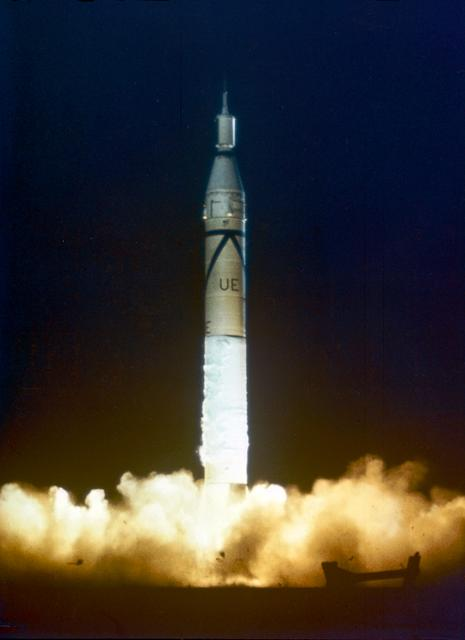
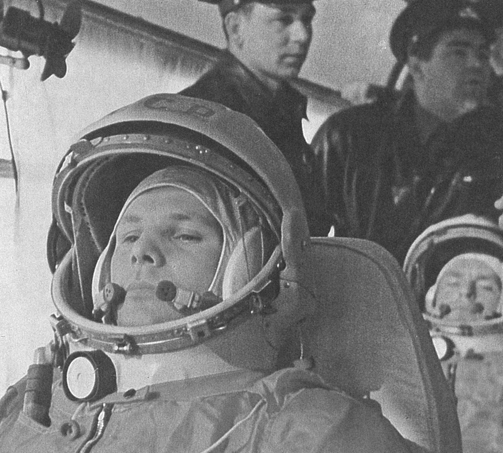
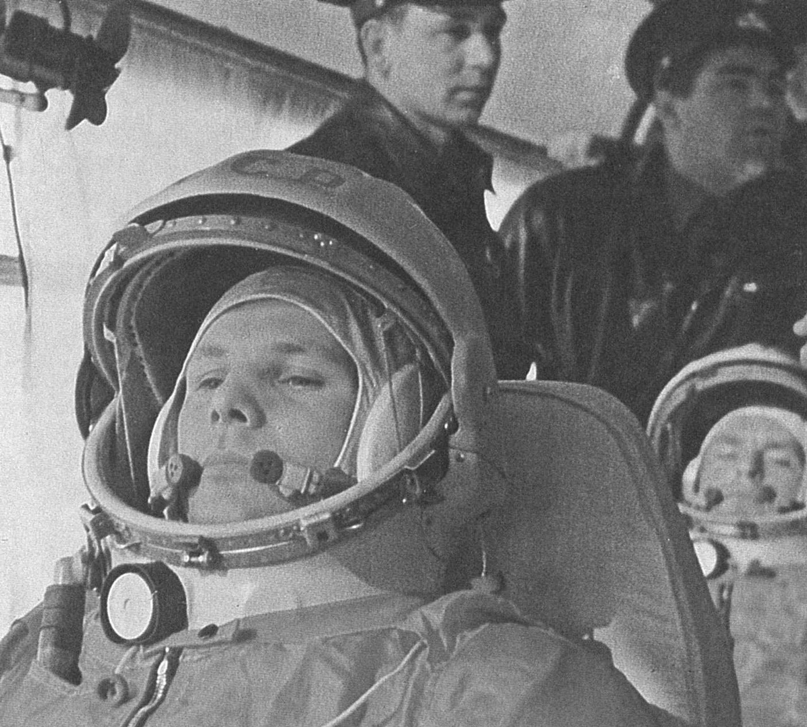

Historia de la Exploración Espacial
La exploración espacial comenzó a mediados del siglo XX, impulsada por la competencia tecnológica entre Estados Unidos y la Unión Soviética, conocida como la Carrera Espacial.
Hechos clave:
- 1957: Lanzamiento del Sputnik 1 por la Unión Soviética, primer satélite artificial en órbita terrestre.
- 1961: Yuri Gagarin se convierte en el primer ser humano en viajar al espacio.
- 1969: Neil Armstrong y Buzz Aldrin llegan a la Luna en la misión Apollo 11.
- 1971: Primer laboratorio espacial, Salyut 1, lanzado por la Unión Soviética.
- Décadas de los 70-80: Misiones Voyager exploran el Sistema Solar exterior.

 
